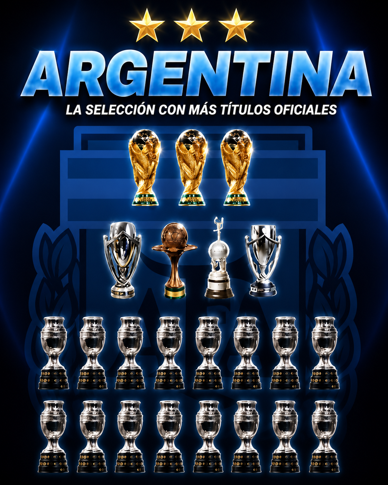

Copas del Mundo
Argentina ganó la Copa Mundial de la FIFA en 1978, 1986 y 2022.
La Selección Argentina ha conseguido numerosos títulos a lo largo de su historia, incluyendo importantes campeonatos internacionales como el Mundial.

Argentina ganó la Copa Mundial de la FIFA en 1978, 1986 y 2022.
La Selección Argentina también consiguió varias ediciones de la Copa América a lo largo de su historia (16).